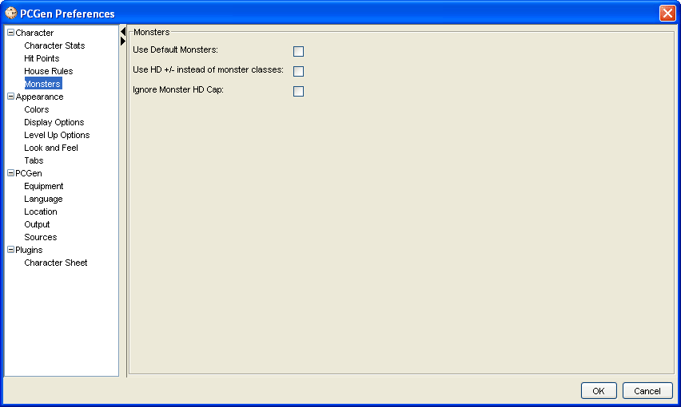

The Monsters option allows certain monster rules to be applied. The checkmark by each option signifies that it is selected to be used for PC creation.
The Use HD +/- instead of monster classes means that you add Hit Dice to monsters as opposed to Monster classes.
The Ignore Monster HD Cap will allow the user to exceed the maximum HD as defined in the data monster files.